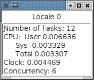
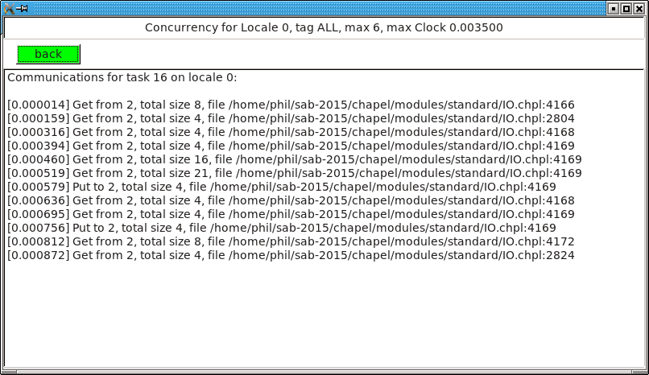
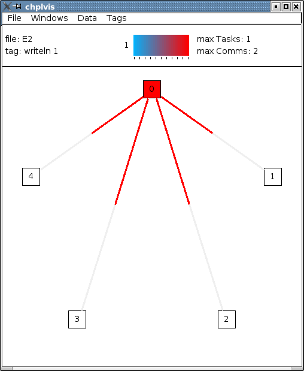
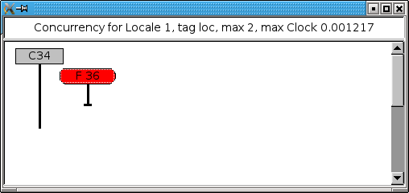
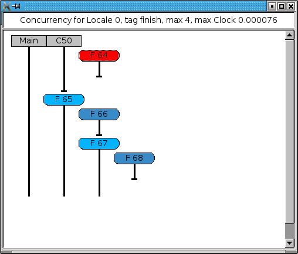

chplvis¶
A Task and Communication Debug Tool for Chapel¶
chplvis is a tool to help the Chapel programmer visualize their
Chapel program's tasks and communication between locales. Using the
standard module VisualDebug, the programmer controls what part
of their program generates information for chplvis. During the run of
a program using the VisualDebug module, data files are
created that are used as input for chplvis. This document
will help you understand the VisualDebug module and the
chplvis tool.
Setup¶
chplvis is built by giving the command make chplvis at the top level of
the chapel tree. This also builds the GUI tool, FLTK, required to build and
run chplvis. (Note: Some versions of Linux may require the standard
package libx11-dev to be installed before FLTK will compile properly.)
To get the most out of this primer, you should compile and run the example
programs and examine the VisualDebug results with chplvis. The
example programs are found on the path examples/primers/chplvis. The
graphics in this primer were produced on a system using the fifo threads
instead of the default, qthreads, for the tasking layer. If you use
qthreads, your task count may differ from the examples.
Chapel Source Code¶
To use chplvis, the programmer adds code to their program. In many
cases, the programmer may want to investigate only part of the program. This
is accomplished by having functions startVdebug and
stopVdebug to control where to start and stop the
instrumentation of their program. Compilation and execution of these programs
remain the same. When the startVdebug is executed, a
collection of files, one per locale, are created in a directory with the
name given in startVdebug.
Example 1¶
Consider the chapel program prog1.chpl: (The example programs in this
primer are found in the directory examples/primers/chplvis in your
distribution tree. The files have more comments than are shown here.)
// Example 1 using visual debug
use VisualDebug;
startVdebug("E1");
coforall loc in Locales do
on loc do writeln("Hello from locale " + here.id + ".");
stopVdebug();
Compiling the program and running it with the options -nl 6 will then
produce a directory called E1 containing 6 data files, one
for each of the locales and named E1-n where n is
replaced with the locale number, a number from 0 to 5. Once this
directory is created, one can run chplvis as chplvis E1 or
simply chplvis and then opening the file E1/E1-0
from the file/open menu. The resulting display is:
(Note: This image is from an X11 display. On OS-X, the menu bar will be on the normal menu bar at the top of the screen and will not show in the main window.)
chplvis Elements¶
The information box shows the file set opened, which tag (see Example 2 ) is displayed, and provides a color bar to help visually see what values are displayed for locales and communication.
A Locale is represented by a colored box in the main display. The initial display draws the color of the locale to represent the number of tasks run at that locale. For example 1, we can see that locale 0 has the most tasks and we expect that to be 12 since that is the maximum number of tasks as shown by the color reference in the information box at the top of the window. Hover your mouse over a locale and it will display a "tooltip" that is the value for that locale.
Communication links are shown by lines between two locale boxes. The color of the line adjacent to a locale box represents the data being sent to that locale from the locale on the other end. For example 1, the line between locale 0 and locale 1 is colored red next to locale 0. This means that there is a lot of communications into locale 0 from locale 1. The blue line next to locale 1 means that there is little communication into locale 1 from locale 0.
Note
If two locales do not communicate, no line is drawn between them. If communication is only one way, the communication color for no communication is gray.
The Data menu controls what data is used for the display colors and available tooltip values. This initial data is number of tasks for locales and number of communications calls for the communication links. For locales, one can select number of tasks, CPU time, clock time or concurrency. Clock time is normally very close to equal across all locales. For the communication links, one can select number of communications or size of data sent.
Display Interaction¶
Clicking on elements of the display will bring up more information. Clicking on a locale will open a new window for that locale showing information for that locale. In example 1, clicking on locale 0 when the locale data is 'number of tasks', 'CPU time' or 'clock time' will produce a window that looks like:
(Note: There is overhead generated in tasks, CPU time, clock time and
communication for the Visual Debug function calls. chplvis removes
the overhead tasks and communication from displayed values, but it can
not remove the CPU and clock time overhead.)
When the locale data selected is 'concurrency', clicking on a locale will bring up a window that shows a task time line for the locale. This display shows the order the tasks are executed and the color of each task shows the clock time for that task. The black vertical vertical lines show the life time of the task. There are two kinds of tasks shown, taskes forked to this locale indicated by an F and tasks started locally indicated by an L.
Note
The task order may change from run to run. The following shows one possible execution order of the tasks:

Note the special Main task. It is shown as a square gray box because it was already running at the start of the displayed data.
In this concurrency display, hovering the mouse over a task will bring up a "tooltip" that shows the clock time taken by that task, the number of gets, puts and forks performed by that task and if available, the source file name and line number of the code that started that task. If the task has communication, clicking on the task will cause the task's communications to be listed in the window similar to the following:
The number in brackets is the clock time since the task started execution. This list gives details about the gets, puts and forks initiated by this task.
In the main window, clicking on a communication line will create a window with communication information for that link. Clicking red part of the line between locale 0 and locale 1 will produce a window that looks like:

It is important to notice the direction of the arrow in the header for the windows. This is for communication from locale 1 to locale 0. The total number of communication calls was 12. It is further broken out into three components:
- Gets: This is a communication call initiated by locale 0 to get a data located on locale 1.
- Puts: This is a communication call initiated by locale 1 to put data from locale 1 onto locale 0.
- Forks: This where locale 1 starts a task running on locale 0. As part of the task start, a block of data is sent to locale 0 as an argument to the task. This data is considered a communication call by chplvis.
Example 2¶
In many programs, one will want to look at a number of small parts of
their program in addition to seeing the total statistics. prog2.chpl
gives an example of using the VisualDebug functions
tagVdebug and pauseVdebug.
// Example 2 of use of VisualDebug module and chplvis tool.
use BlockDist;
use VisualDebug;
config var ncells = 10;
proc main() {
// Create a couple of domains and a block mapped data array.
const Domain = { 1 .. ncells };
const mapDomain = Domain dmapped Block(Domain);
var data : [mapDomain] int = 1;
// Start VisualDebug here
startVdebug ("E2");
// First computation step ... a simple forall
forall i in Domain do data[i] += here.id + 1;
// Write the result, we want to see the results of the above
// so we tag before we continue.
tagVdebug("writeln 1");
writeln("data= ", data);
// Second computation step ... using the distributed domain
tagVdebug("step 2");
forall i in mapDomain do data[i] += here.id+1;
// Don't capture the writeln
pauseVdebug();
writeln("data2= ", data);
// Reduction step
tagVdebug("reduce");
var i = + reduce data;
// done with visual debug
stopVdebug();
writeln ("sum is " + i + ".");
}
Note that the startVdebug("E2") is placed after the declarations
so that tasks and communication for the declarations are not included.
The initial display of chplvis shows data for the entire run. (This
program was run on five locales.)
There is now a new menu called Tags that reflects the
tagVdebug() calls in the program. Selecting the tags menu
gives the following display:
There are two special tags in this menu, All and Start. All
shows the initial display for the entire run and Start shows the
tasks and communication only between the startVdebug("E2") call and
the first call to tagVdebug(), in this case, tagVdebug("writeln
1"). The display for the Start tag looks like:
You should be able to immediately see that
- Locale 0 has 3 tasks and all other locales do not have any tasks. (Task boxes colored white mean no tasks.) This means that locale 0 is doing all the computation.
- The majority of communication is happening from other locales to locale 0. By clicking on the communication links you should be to easily see that locale 0 is doing gets and puts for all the communication.
Compare the results of this first forall loop with the loop in the second
computation step, tagged step 2. Notice, step 2 does not include the
second writeln because of the call to pauseVdebug().
That suspends collecting task and communication data until the next
tagVdebug() call.
The difference between the two loops is the domain used. Domain
is not a distributed domain, so the computation remains on locale 0.
The mapDomain is a distributed domain, so the computation is
distributed. One needs to be careful in specifying these kind of loops
to make sure you use a distributed domain if you are operating on
distributed data and you want distributed computation. This is
where chplvis can quickly let you know if you used the wrong
domain in your forall loop.
Now, consider the writeln 1 tag display.
Notice the gray communication links. This means there was no data flow from locale 0 to the other locales. The gray links are provided to make it easy to visually see the corresponding locale.
Finally, for completeness, look at the display for the last tag used, reduce. It is very similar to the step 2 tag.
Example 3¶
The program prog3.chpl is similar to the program
examples/programs/jacobi.chpl. This version uses dmapped domains
and VisualDebug. Only parts of the code are shown to illustrate
other chplvis features. First, config variables are handy here so one
can create different directories of chplvis data on different runs.
Although not shown here, config params are useful to allow your
program to use VisualDebug and generate data only if you need it.
// Allow different runs to create different data directories so it is
// easier to compare runs with chplvis.
config var dirname = "E3";
// Start VisualDebug here to see that distributed domain and variable
// declarations generate tasks and communication.
startVdebug(dirname);
Next, if tagVdebug() calls are made inside a loop, it
produces a unique tag for each call.
// Main computation loop -- we want to see the two parts of this
// loop, the computation and the reduction part.
while (delta > epsilon) {
// Tag the computation part of this loop
tagVdebug("computation");
for t in 1 .. compLoop do {
forall (i,j) in R do
A(i,j) = Temp(i,j);
forall (i,j) in R do
Temp(i,j) = (A(i-1,j) + A(i+1,j) + A(i,j-1) + A(i,j+1)) / 4.0;
}
// tag the reduction part of this loop.
tagVdebug("max");
forall (i,j) in R {
Diff(i,j) = abs(Temp(i,j)-A(i,j));
}
delta = max reduce Diff;
pauseVdebug();
iteration += compLoop;
if (verbose) {
writeln("iteration: ", iteration);
writeln("delta: ", delta);
writeln(Temp);
}
}
We use pauseVdebug() here to make sure chplvis data is generated for
the parts of the loop of interest.
This example was run with the command line arguments --n=8 -nl 8.
The following shows the default tags menu for this run:
Notice that the tags are now numbered and the tags menu extends past
the end of the window. (This screenshot does not show the entire tags
menu that was displayed on the screen.) All and Start remain the
same, but since two or more tags have the same name, chplvis shows a
unique tag for each tagVdebug() call. Notice the new menu
item above All which is highlighted in this example. Merge Tags allows you
to see data for tags with the same name to be merged together. For this
example, with merged tags, the tags menu now looks like:
Now, selecting the tag computation will show the accumulated tasks and
communication for the entire while loop for just the computation
part of the loop. This is all code between the tagVdebug("computation")
call and the tagVdebug("max") call. Selecting the tag max will
then show accumulated tasks and communication for the code between
the tagVdebug("max") call and the pauseVdebug() call.
The following shows the display for the computation tags and displaying CPU
data.
The concurrency display is not available for tags in the "merge tag mode" except the All tag, which is the same for both tags mode.
This example has some extra config variables that can be used to help
understand the usefulness of chplvis. For example, one can compare
the CPU time used between the computation and max phases of this
Jacobi computation. The config variable compLoop allows one to run
the computation loop more than once before then checking for convergence
in the max tagged code. It is known that the Jacobi code will not
diverge and thus extra computation steps will not produce a "wrong"
answer. By doing extra computation, the result will be a bit more
accurate. The reader should use the compLoop and the dirname
config variables to run several versions of this program yielding
a chplvis directory for each run. Then one can compare the different
results by running chplvis multiple times. By a good choice of
the compLoop variable, one can dramatically reduce the CPU time for
computing the max while not increasing the computation time by much.
Example 4¶
To help show another feature of the "Concurrency View", prog4.chpl was
written to create a begin task on all locales and have those tasks
live across calls to the VisualDebug module. The code is:
// Example 4, begin tasks as shown in chplvis
// This is a contrived example to have tasks live
// across a tagVdebug() call.
use VisualDebug;
use BlockDist;
const space = { 0 .. #numLocales };
const Dspace = space dmapped Block (boundingBox=space);
startVdebug("E4");
var go$: [Dspace] single bool;
var done$: [Dspace] single bool;
// Start a begin task on all locales. The task will start and then block.
coforall loc in Locales do
on loc do begin { // start a async task
go$[here.id]; // Block until ready!
writeln ("Finishing running the 'begin' statement on locale "
+ here.id + ".");
done$[here.id] = true;
}
tagVdebug("loc");
coforall loc in Locales do
on loc do writeln("Hello from " + here.id);
tagVdebug("finish");
// Let all tasks go
go$ = true;
// Wait until all tasks are finished
done$;
stopVdebug();
First we will look at the results of running this code on a single
locale. Even though there is no communication, chplvis can help
you see how tasks are run, especially how much concurrency you have.

This view shows the tasks for locale 0, the only locale in this run. Things to notice from this view are

- Main represents the main program. It is shown as a gray rectangular box to show that it was running at the time of
startVdebug()was called.- In the tag ALL view, tags are shown in the sequence of tasks.
- Task F 28 is started before the loc tag, but it finishes in the finish tag.
This view shows the tasks for locale 1 on a 3 locale run for the tag loc. In this view, the task started before the loc tag appears as a gray rectangular box at the top of the view. This indicates that is was running at the start of the tag. The lack of a task termination horizontal line on the task line indicates that the task continued running past the end of the tag. Tasks that are running at the beginning of a tag and terminate during a tag can be seen by the horizontal termination line, such as for task C50, a continued task for locale 0 on the same 3 locale run as seen next.
Main will always show as a continued task with no termination. Main is shown only for locale 0. Main is included in the calculation of concurrency as seen above.
Config Paramaters and Variables¶
Because VisualDebug support requires added procedure calls in source to
use it, there is a boolean config const, VisualDebugOn
that controls generation of VisualDebug data.
This may be set on the execution command line like any config const.
The standard default value is true.
This default value may be changed at compile time
by setting the config param DefaultVisualDebugOn.
If this is set to false at compile time
then VisualDebugOn must be set to true
on the execution command line to generate VisualDebug data.
Final Comments¶
The following items are not covered above:
By clicking on the locale box or a communication link, a window with more detailed information is presented. To make it easier to close those windows, a second click on the same location will close the window. The Windows menu allows one to close or show all previously created locale and communication windows.
The command line for
chplvisis:chplvis [name]where name may be the name of the directory or a file in the directory generated by a run of a program using
VisualDebug. If name is not given, it looks for the directory named.Vdebugwhich is generated if thestartVdebugfunction is given a string of zero length. ("")In all the examples given, all calls to
xVdebug()routines were essentially in themainprogram. While this will not be the case in all programs, a couple of things should be noted.
- All calls run code on all locales.
- All calls should be made from locale 0.
- Calls should not be made in
onstatements. While such programs should run, thechplvisdata will mostly likely not make much sense.- Calls should not be made in
beginstatements for similar reasons.- Calls should not be made in forall or coforall statements.
chplvis was created in 2015 and first released with Chapel-1.12.0.
The Chapel team hopes this tool will be of use to Chapel programmers
and would like feedback on this tool.
| Author: | Philip A. Nelson |
|---|